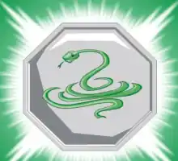

Dentre as virtudes dos nativos da Serpente estão a afetividade, a ponderação e a prudência, eles também são perseverantes e reflexivos. “Podem ser tolerantes ao extremo, inspirando confiança, mas, às vezes, certa ingenuidade”. Os nativos de Serpente são as pessoas nascidas nas seguintes datas:
Talismã da Cobra
Esse talismã da ao portador invisibilidade.